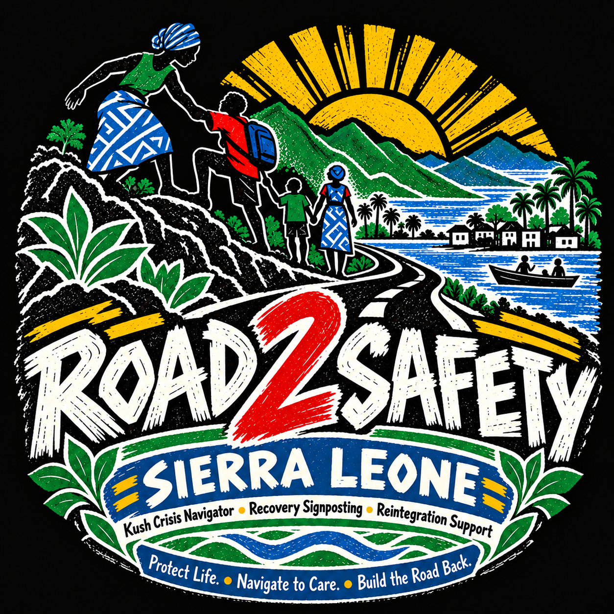
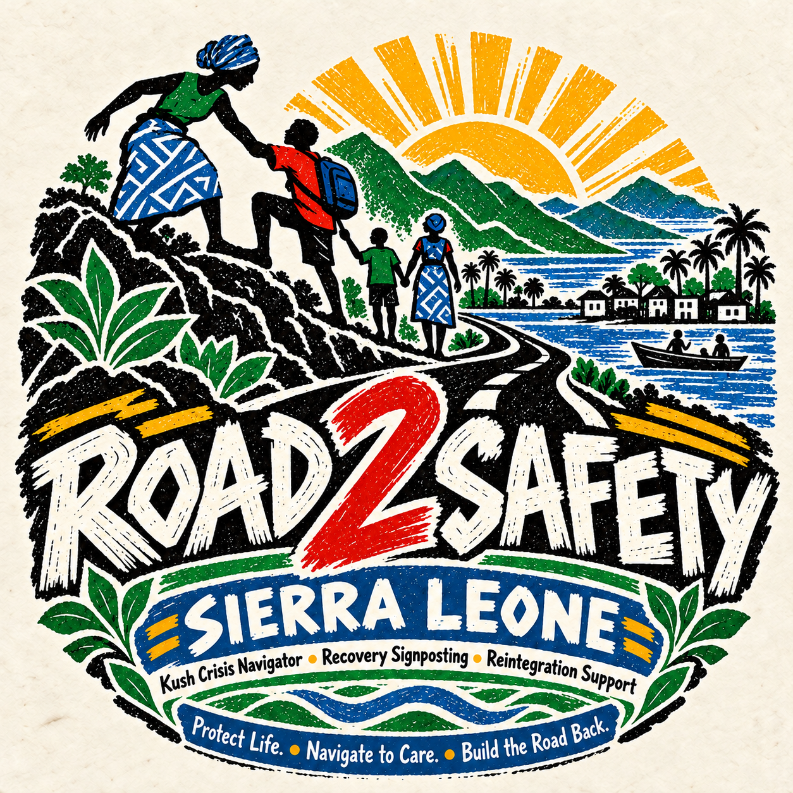
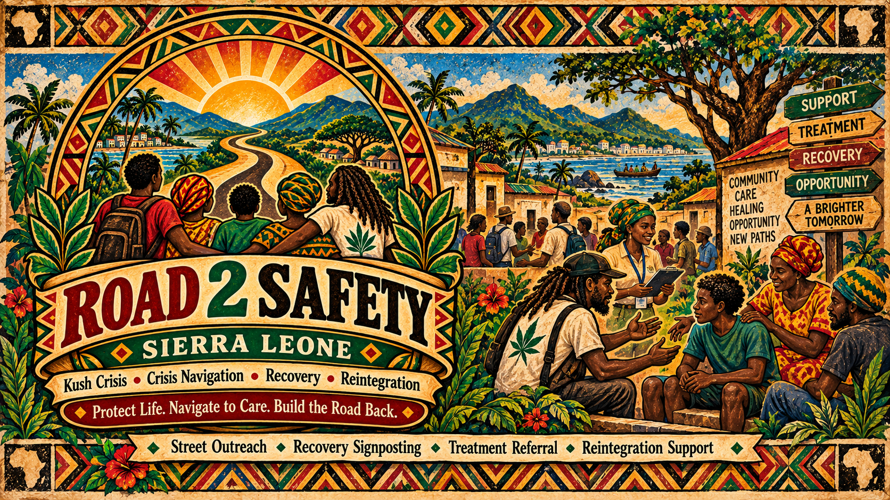

Protect life
Help individuals and families understand routes into emergency care, treatment, rehabilitation and social support.

ROAD 2 SAFETYINTERNATIONAL · SIERRA LEONEPROTECT LIFE · NAVIGATE TO CARE · BUILD THE ROAD BACK
Road 2 Safety International is being established as a community-rooted, evidence-led response to Sierra Leone’s Kush crisis — connecting crisis navigation, recovery, reintegration, systems learning and practical routes into purpose.

WHY ROAD 2 SAFETY
Help individuals and families understand routes into emergency care, treatment, rehabilitation and social support.
Focus on the difficult spaces between referral, transport, admission, discharge, follow-up and long-term recovery.
Connect recovery to family, skills, livelihoods and community reintegration rather than ending the journey at discharge.

CONNECTED, BUT RING-FENCED
Frontline recovery, research, economic opportunity and systems work can reinforce each other without becoming ethically or financially blurred.
Navigation, referral follow-through, recovery support and reintegration.
A proposed circular-economy and reintegration pathway, subject to formal partnership, feasibility and safeguards.
Toxicology, natural cannabinoid adjunct research and Sierra Leone × Gabon Iboga research under proper ethics and clinical governance.
Evidence-led mapping of supply, finance, institutional capacity and recovery reinvestment.
MOBILE-FIRST NAVIGATOR
The current prototype is information-only and deliberately does not collect medical histories, addiction records, children’s case data, precise location or confidential referrals. Sensitive features remain behind a future governance and DPIA release gate.

Help · Recovery · Family · Contribute
Open Navigator →A practical, non-residential navigation model.
The centre is a bridge — not a long-stay rehab facility.
Kush Crisis Navigator · Recovery Signposting · Reintegration Support
Protect Life. Navigate to Care. Build the Road Back.
FORMATION STATUS
Foundational Framework v2
Operational governance starter pack
Evidence & source register
3-year financial model
UK CIC incorporation details
Sierra Leone / UK institutional engagement
WORK WITH US
Institutional, recovery, research, engineering, governance, funding and development enquiries are welcome.